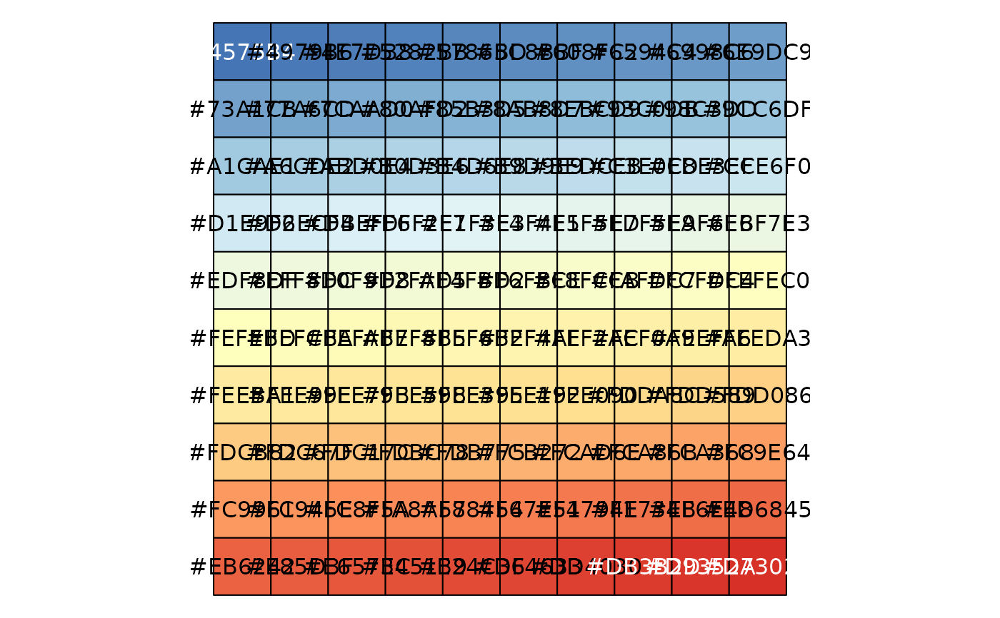

Provides curated qualitative, sequential, and diverging palettes for multiple plot types. Supports intensity adjustment and preview.
Usage
palettes(
category = "box",
palette = "nrc",
alpha = 1,
counts = 50,
show_col = TRUE,
show_message = FALSE
)Arguments
- category
Character. Plot/palette category: one of `box`, `continue2`, `continue`, `random`, `heatmap`, `heatmap3`, `tidyheatmap`.
- palette
Character or numeric. Palette name or index (varies by category).
- alpha
Numeric. Alpha (transparency) scaling factor. Default is 1.
- counts
Integer. Number of colors (for continuous palettes). Default is 50.
- show_col
Logical. If TRUE, prints the palette. Default is TRUE.
- show_message
Logical. If TRUE, prints available options. Default is FALSE.
Examples
# \donttest{
colors <- palettes(category = "box", palette = "nrc", show_message = TRUE)
#> ℹ Available categories: box, continue2, continue, random, heatmap, heatmap3, tidyheatmap
#> ℹ Box palettes: nrc, jama, aaas, jco, paired1, paired2, paired3, paired4, accent, set2
#> [1] "'#E64B35FF', '#4DBBD5FF', '#00A087FF', '#3C5488FF', '#F39B7FFF', '#8491B4FF', '#91D1C2FF', '#DC0000FF', '#7E6148FF'"
 heatmap_colors <- palettes(
category = "heatmap", palette = 1, counts = 100, show_col = TRUE
)
#> ℹ Heatmap palettes: 1 (pheatmap), 2 (peach), 3 (blues), 4 (virids), 5 (reds), 6 (RdBu), 7 (navy_firebrick), 8 (magma)
#> [1] "'#4575B4', '#4979B6', '#4E7DB8', '#5282BB', '#5786BD', '#5C8BBF', '#608FC2', '#6594C4', '#6998C6', '#6E9DC9', '#73A1CB', '#77A6CD', '#7CAAD0', '#80AFD2', '#85B3D5', '#8AB8D7', '#8EBCD9', '#93C0DB', '#98C3DD', '#9CC6DF', '#A1CAE1', '#A6CDE2', '#ABD0E4', '#B0D3E6', '#B4D6E8', '#B9D9E9', '#BEDCEB', '#C3E0ED', '#C8E3EF', '#CCE6F0', '#D1E9F2', '#D6ECF4', '#DBEFF6', '#DFF2F7', '#E1F3F4', '#E3F4F1', '#E5F5ED', '#E7F5EA', '#E9F6E6', '#EBF7E3', '#EDF8DF', '#EFF8DC', '#F0F9D8', '#F2FAD5', '#F4FBD2', '#F6FBCE', '#F8FCCB', '#FAFDC7', '#FCFDC4', '#FEFEC0', '#FEFEBD', '#FEFCBA', '#FEFAB7', '#FEF8B5', '#FEF6B2', '#FEF4AF', '#FEF2AC', '#FEF0A9', '#FEEFA6', '#FEEDA3', '#FEEBA1', '#FEE99E', '#FEE79B', '#FEE598', '#FEE395', '#FEE192', '#FEE090', '#FDDA8C', '#FDD589', '#FDD086', '#FDCB82', '#FDC67F', '#FDC17C', '#FDBC78', '#FDB775', '#FCB272', '#FCAD6E', '#FCA86B', '#FCA368', '#FC9E64', '#FC9961', '#FC945E', '#FC8F5A', '#FA8A57', '#F88454', '#F67E51', '#F4794E', '#F1734B', '#EF6E48', '#ED6845', '#EB6242', '#E85D3F', '#E6573C', '#E45139', '#E24C36', '#DF4633', '#DD4030', '#DB3B2D', '#D9352A', '#D73027'"
heatmap_colors <- palettes(
category = "heatmap", palette = 1, counts = 100, show_col = TRUE
)
#> ℹ Heatmap palettes: 1 (pheatmap), 2 (peach), 3 (blues), 4 (virids), 5 (reds), 6 (RdBu), 7 (navy_firebrick), 8 (magma)
#> [1] "'#4575B4', '#4979B6', '#4E7DB8', '#5282BB', '#5786BD', '#5C8BBF', '#608FC2', '#6594C4', '#6998C6', '#6E9DC9', '#73A1CB', '#77A6CD', '#7CAAD0', '#80AFD2', '#85B3D5', '#8AB8D7', '#8EBCD9', '#93C0DB', '#98C3DD', '#9CC6DF', '#A1CAE1', '#A6CDE2', '#ABD0E4', '#B0D3E6', '#B4D6E8', '#B9D9E9', '#BEDCEB', '#C3E0ED', '#C8E3EF', '#CCE6F0', '#D1E9F2', '#D6ECF4', '#DBEFF6', '#DFF2F7', '#E1F3F4', '#E3F4F1', '#E5F5ED', '#E7F5EA', '#E9F6E6', '#EBF7E3', '#EDF8DF', '#EFF8DC', '#F0F9D8', '#F2FAD5', '#F4FBD2', '#F6FBCE', '#F8FCCB', '#FAFDC7', '#FCFDC4', '#FEFEC0', '#FEFEBD', '#FEFCBA', '#FEFAB7', '#FEF8B5', '#FEF6B2', '#FEF4AF', '#FEF2AC', '#FEF0A9', '#FEEFA6', '#FEEDA3', '#FEEBA1', '#FEE99E', '#FEE79B', '#FEE598', '#FEE395', '#FEE192', '#FEE090', '#FDDA8C', '#FDD589', '#FDD086', '#FDCB82', '#FDC67F', '#FDC17C', '#FDBC78', '#FDB775', '#FCB272', '#FCAD6E', '#FCA86B', '#FCA368', '#FC9E64', '#FC9961', '#FC945E', '#FC8F5A', '#FA8A57', '#F88454', '#F67E51', '#F4794E', '#F1734B', '#EF6E48', '#ED6845', '#EB6242', '#E85D3F', '#E6573C', '#E45139', '#E24C36', '#DF4633', '#DD4030', '#DB3B2D', '#D9352A', '#D73027'"

# }